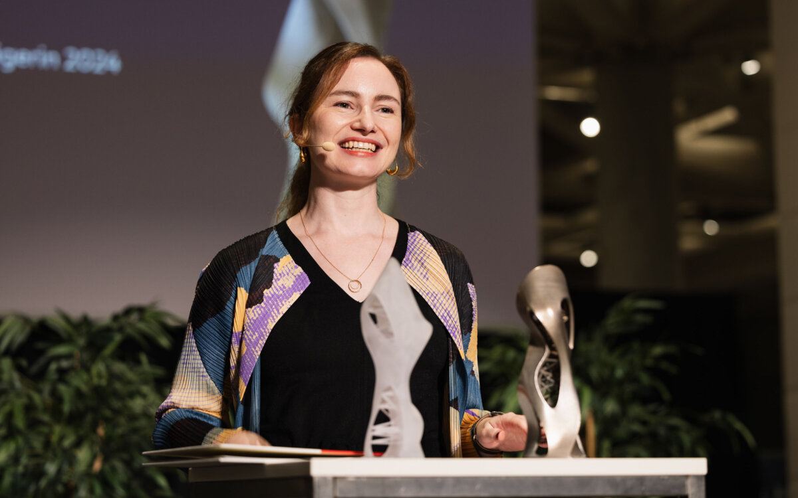
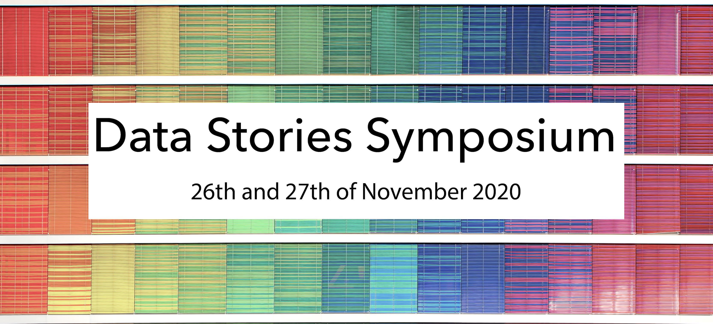
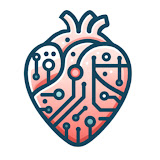
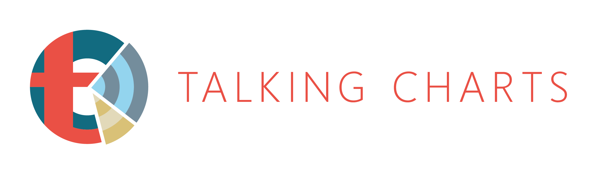
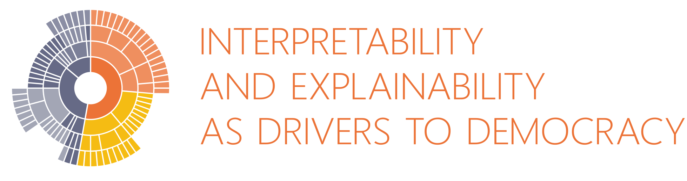

2026

I am an Assistant Professor at the Mohamed Bin Zayed University of Artificial Intelligence (MBZUAI), UAE. I am also affiliated with the University of Vienna (Research Group for Visualization and Data Analysis, Faculty of Computer Science) and a Senior Scientist at the AIT Austrian Institute of Technology, Austria.
My research focuses on human-data interaction - how people make sense of data, how they are discovered and used, and the ethical and collaborative dimensions of data-centric work, including data governance and explainable AI. I’m particularly interested in how different groups, from general audiences to domain experts, engage with data and what this means for understanding and communication. Building on this, I develop and study methods and tools that make data and models more understandable for diverse audiences.
laura.koesten (at) mbzuai.ac.ae

Awards
2025
1st Place in the VIS x GenAI Agentic Visualization Challenge at the IEEE VIS 2025 Workshop on GenAI, Agents, and the Future of VIS
Publications
Journals & books
PLUTO: A Public Value Assessment Tool
2026, IEEE Computer Graphics and Applications (Special Issue on Inclusive Data Experiences, to appear)
Laura Koesten, Péter Ferenc Gyarmati, Connor Hogan, Bernhard Jordan, Seliem El-Sayed, Barbara Prainsack, Torsten Möller
2026, IEEE Transactions on Visualization and Computer Graphics (TVCG)
Antonia Saske, Laura Koesten, Torsten Möller, Judith Staudner, Sylvia Kritzinger
2026, International Journal of Human-Computer Interaction (accepted for publication)
Timothée Schmude, Laura Koesten, Torsten Möller, Sebastian Tschiatschek
2025, Proceedings of the VLDB Endowment (PVLDB)
Marcelo Arenas, Enrico Franconi, Janik Hammerer, Olaf Hartig, Katja Hose, Laura Koesten, George Konstantinidis, Leonid Libkin, Wim Martens, Yuya Sasaki, Stefanie Scherzinger, Katherine Thornton, Hsiang-Yun Wu
2025, International Journal of Human-Computer Studies
Timothée Schmude, Laura Koesten, Torsten Möller, Sebastian Tschiatschek
2024, Harvard Data Science Review
Kathleen Gregory, Laura Koesten, Regina Schuster, Torsten Möller, Sarah Davies
2023, Synthesis Lectures on Information Concepts, Retrieval, and Services, Springer Nature
Kathleen Gregory, Laura Koesten
2023, IEEE Computer Graphics and Applications
Yu Jin, Laura Koesten, Torsten Möller
2024, IEEE Transactions on Visualization and Computer Graphics (TVCG)
Regina Schuster, Kathleen Gregory, Torsten Möller, Laura Koesten
2025, IEEE Transactions on Visualization and Computer Graphics
Prantl, V., Moeller, T., Koesten, L.
2023, EticaPolitica/EthicsPolitics
Gefion Thurmer, Laura Koesten, Elena Simperl
2020, International Journal for Human Computer Studies
Laura Koesten, Kathleen Gregory, Paul Groth, Elena Simperl
2020, Cell Press Journal
Laura Koesten, Pavlos Vougiouklis, Elena Simperl, Paul Groth
2020, International Journal for Human Computer Studies
Laura Koesten, Elena Simperl, Tom Blount, Emilia Kacprzak, Jeni Tennison
2019, International Journal on Very Large Data Bases
Adriane Chapman, Elena Simperl, Laura Koesten, George Konstantinidis, Luis-Daniel Ibez-Gonzalez, Emilia Kacprzak, Paul Groth
2018, Journal of Web Semantics
Emilia Kacprzak, Laura Koesten, Luis D Ibáñez, Tom Blount, Jeni Tennison, Elena Simperl
Conferences
Humans-in-the-contestability-loop: Designing for social counselors to understand and challenge algorithmic decisions
2026, Proceedings of the 2026 ACM Conference on Fairness, Accountability, and Transparency (FAccT ’26). Association for Computing Machinery.
Schmude T., Pahr D., Koesten L., Möller T., Tschiatschek S.
2026, CHI Conference on Human Factors in Computing Systems (CHI ’26)
Regina Schuster, Kathleen Gregory, Torsten Möller, Laura Koesten
2026, CHI Conference on Human Factors in Computing Systems (CHI ’26)
Laura Koesten, Daphne Miedema, Hsiang-Yun Wu, Mathias Funk
2025, CHI Conference on Human Factors in Computing Systems (CHI ’25)
Christian Knoll, Torsten Möller, Kathleen Gregory, Laura Koesten
2025, CHI Conference on Human Factors in Computing Systems (CHI ’25)
Laura Koesten, Antonia Saske, Sandra Starchenko, Kathleen Gregory
2025, CHI Conference on Human Factors in Computing Systems (CHI ’25)
Jakob Carl Uhl, Georg Regal, Laura Koesten, Michael Oppermann, Markus Murtinger, Manfred Tscheligi
2023, ACM conference on Conversational User Interfaces (CUI)
Bernhard Jordan, Laura Koesten, Torsten Möller
2023, ACM Conference on Fairness, Accountability, and Transparency (ACM FAccT)
Timothée Schmude, Laura Koesten, Torsten Möller, Sebastian Tschiatschek
2023, ACM International Conference on Interactive Media Experiences (IMX)
Katharina Wuensche, Laura Koesten, Torsten Möller, Jian Chen
2020, International Conference on Computer‑Human Interaction Research and Applications
Tom Blount, Laura Koesten, Yuchen Zhao, Elena Simperl
2019, CHI'19 Conference on Human Factors in Computing Systems
Laura Koesten, Emilia Kacprzak, Jeni Tennison, Elena Simperl
2018, International Conference on Knowledge Engineering and Knowledge Management
Emilia Kacprzak, José M. Giménez‑Garcı́a, Alessandro Piscopo, Laura Koesten, Luis Daniel Ibáñez, Jeni Tennison, Elena Simperl
2017, Web Engineering ‑ 17th International Conference, ICWE
Emilia Kacprzak, Laura M. Koesten, Luis Daniel Ibáñez, Elena Simperl, Jeni Tennison
2017, CHI'17 Conference on Human Factors in Computing Systems
Laura Koesten, Emilia Kacprzak, Jeni Tennison, Elena Simperl
2015 — Ergonomics & Human Factors
Laura Koesten, Diane Gyi, Annabel Masson
PLUTO: A Public Value Assessment Tool
2026, IEEE Computer Graphics and Applications (Special Issue on Inclusive Data Experiences, to appear)
Laura Koesten, Péter Ferenc Gyarmati, Connor Hogan, Bernhard Jordan, Seliem El-Sayed, Barbara Prainsack, Torsten Möller
2026, IEEE Transactions on Visualization and Computer Graphics (TVCG)
Antonia Saske, Laura Koesten, Torsten Möller, Judith Staudner, Sylvia Kritzinger
2026, International Journal of Human-Computer Interaction (accepted for publication)
Timothée Schmude, Laura Koesten, Torsten Möller, Sebastian Tschiatschek
2025, IEEE Transactions on Visualization and Computer Graphics
Prantl, V., Moeller, T., Koesten, L.
2025, International Journal of Human-Computer Studies
Timothée Schmude, Laura Koesten, Torsten Möller, Sebastian Tschiatschek
2025, Proceedings of the VLDB Endowment (PVLDB)
Marcelo Arenas, Enrico Franconi, Janik Hammerer, Olaf Hartig, Katja Hose, Laura Koesten, George Konstantinidis, Leonid Libkin, Wim Martens, Yuya Sasaki, Stefanie Scherzinger, Katherine Thornton, Hsiang-Yun Wu
2024, IEEE Transactions on Visualization and Computer Graphics (TVCG)
Regina Schuster, Kathleen Gregory, Torsten Möller, Laura Koesten
2024, Harvard Data Science Review
Kathleen Gregory, Laura Koesten, Regina Schuster, Torsten Möller, Sarah Davies
2023, Synthesis Lectures on Information Concepts, Retrieval, and Services, Springer Nature
Kathleen Gregory, Laura Koesten
2023, IEEE Computer Graphics and Applications
Yu Jin, Laura Koesten, Torsten Möller
2023, EticaPolitica/EthicsPolitics
Gefion Thurmer, Laura Koesten, Elena Simperl
2020, International Journal for Human Computer Studies
Laura Koesten, Kathleen Gregory, Paul Groth, Elena Simperl
2020, Cell Press Journal
Laura Koesten, Pavlos Vougiouklis, Elena Simperl, Paul Groth
2020, International Journal for Human Computer Studies
Laura Koesten, Elena Simperl, Tom Blount, Emilia Kacprzak, Jeni Tennison
2019, International Journal on Very Large Data Bases
Adriane Chapman, Elena Simperl, Laura Koesten, George Konstantinidis, Luis-Daniel Ibez-Gonzalez, Emilia Kacprzak, Paul Groth
2018, Journal of Web Semantics
Emilia Kacprzak, Laura Koesten, Luis D Ibáñez, Tom Blount, Jeni Tennison, Elena Simperl
2016 — PROFILES@ ESWC
Emilia Kacprzak, Laura Koesten, Tom Heath, and Jeni Tennison
2016 — SAL@SIGIR 2016
Laura Koesten, Emilia Kacprzak and Jeni Tennison
Talks
2025
Invited speaker at the Institute of Science and Technology Austria (ISTA)
2025
Panel Member at the Digital Humanism Conference
2025
Invited speaker at the Data Excellence Konferenz, Austrian Digital Value
2025
Invited lecture talk for the MSc program in Human-Computer Interaction at the University of Salzburg
2025
Keynote Speaker, Workshop on Big (and Small) Data in Science and Humanities (BigDS) at BTW 2025: 21st Conference on Database Systems for Business, Technology, and Web
2025
Invited speaker at the Data Excellence Community meeting of the City of Vienna
2024
Invited speaker at the international Digital Democracy Workshop (ProEuropeanValuesAT)
2024
Invited speaker in the lecture series Foundation and Methods of Digital Humanism
2024
TV Interview: Kurier TV, Science Talk Spontan Gefragt
2023
Invited talk at the EDGE lecture series (Centre for Microbiology and Environmental Systems Science, University of Vienna)
2023
Invited talk at VRVis Zentrum für Virtual Reality und Visualisierung Forschungs-GmbH
2023
Invited talk at the retreat of the division of Terrestrial Ecosystem of the Center for Microbiology
2023
Invited speaker at the Wikimedia Research Showcase
2023
Invited talk at the NYU (New York University) Dataset Search and Discovery seminar
2022
Invited speaker and co-facilitator of the Strand-Aldwych Data Stories Workshop, by Kings College London & the London Westminster City Council
2022
Invited speaker at Data Stories 2022, conference by the Central European University
2022
Invited lecture at the department of Sociology, University of Vienna, Class: Research Practice
2021
Invited speaker at the Cognitive Science Lecture Series, University of Vienna
2021
Invited speaker at the uniMind-University Meets Industry workshop
2020
Guest speaker at TGSW 2020, Open Data Workshop
2020
Invited speaker at UK underwater: Data-driven approaches to communicating flooding
2020
Gekoboard, a data visualisation company
2019
Wirtschaftsuniversität Wien
2019
Data Archiving and Networked Services - DANS
2018
Lunchtime lecture at The Open Data Institute
2018
Data and Storytelling Workshop, The Open Data Institute
Community engagement & organisation
Since 2026
Chair of the Austrian ACM SIGCHI Chapter
2026
Area Chair for the ACM Conference on Human Factors in Computing Systems (CHI 2026)
2026
Program Committee member for the Digital Humanism – Interdisciplinary Science and Research Conference
2026
Program Committee member for IEEE VIS 2026
2025
IEEE VIS25 Visualization Conference Organizing Committee Inclusivity and Accessibility Chair
2024-2025
Co-chair of the CHI24 Workshop “Sensemaking: What is it today?” at the ACM CHI Conference on Human Factors in Computing Systems
2023
Co-chair of the initiative “Opening research data: Building a WWTF position”
Since 2023
Member of the Environment and Climate Research Hub
2023
Organizer of the workshop “Seeing data, understanding the future”
2022-2024
Program committee member for CHIIR ACM SIGIR Conference on Human Information Interaction and Retrieval
2022
Member of expert group “Data excellence: strategies for Austria”
2022
Co-facilitator of a “Kinderuni” workshop day to engage children with data
2022
Co-facilitator of the Talking Charts Workshop “Connecting the Dots”
2021-2022
Organiser of the CogSci Lab Visit at the Research Group Visualization and Data Analysis
EU H2020
2021
2020
Datastories Symposium 2020

2020
2019
2018
2018
2018
Teaching
University of Vienna course page
Since 2025
MBZUAI Curricula development in collaboration with the Department Head for an MSc in HCI & AI and a PhD programme in HCI
HCI department representative on the Teaching & Learning Advisory Board at MBZUAI
2024
Winter
Data Visualization, Design Thinking, Contributor to the Cognitive Science Lecture Series, Supervision
Summer
Human Computer Interaction, Data Visualization, Supervision
2023
Winter
Data Visualization, Contributor to the Cognitive Science Lecture Series, Supervision
Summer
Human Computer Interaction, Supervision
2022
Winter
Data Visualization, Contributor to the Cognitive Science Lecture Series, Supervision
Summer
Human Computer Interaction, Data Visualization, Supervision
2021
Winter
Data Visualization, Contributor to the Cognitive Science Lecture Series, Supervision
Summer
Human Computer Interaction, Supervision
Projects
Current

AICARD Transforming Cardiac Research:
Visual Exploration and AI Prediction Modeling of Real-Life, Multi-Modal Data
Medical University of Vienna, University of Vienna

Talking Charts - How do people make sense of data visualizations?
University of Vienna

Interpretability and Explainability as Drivers to Democracy
University of Vienna
Past
Data Stories - Engaging with data in a post-truth environment
King's College London, University of Southampton, The ODI
Past

Past
TheyBuyForYou - Enabling procurement data value chains
University of Southampton
WDAQUA - Answering questions using web data
University of Southampton
News
2026